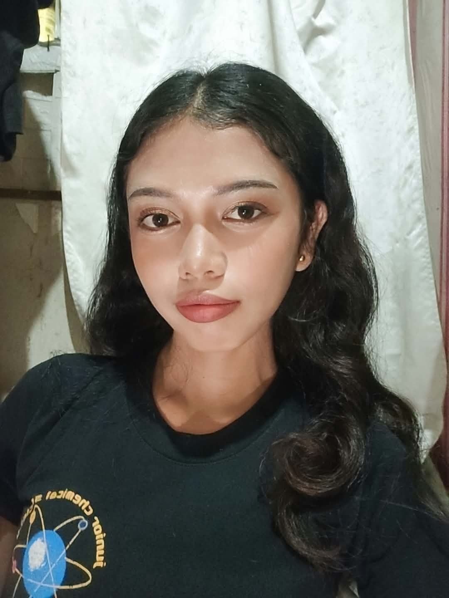

I am just an ordinary person with my own dreams, struggles, and stories to tell. I may be quiet and simple, but there is more to me than what people see. I enjoy doing things that make me happy, like drawing, painting, listening to music, cooking, and spending time appreciating the beauty of nature. I know that I am not perfect, and I still have a lot to learn about myself and life. There are times when things get difficult, but I try my best to keep going and learn from every experience. I believe that every little moment has a story to tell, and every experience helps me become a better version of myself. This is my story, a story of who I am, what I have been through, and who I hope to become someday.